3.1 Length
Length data were pulled from survdat. Only years with more than 10 fish lengths were considered for analysis.
3.1.1 Figures
Overview
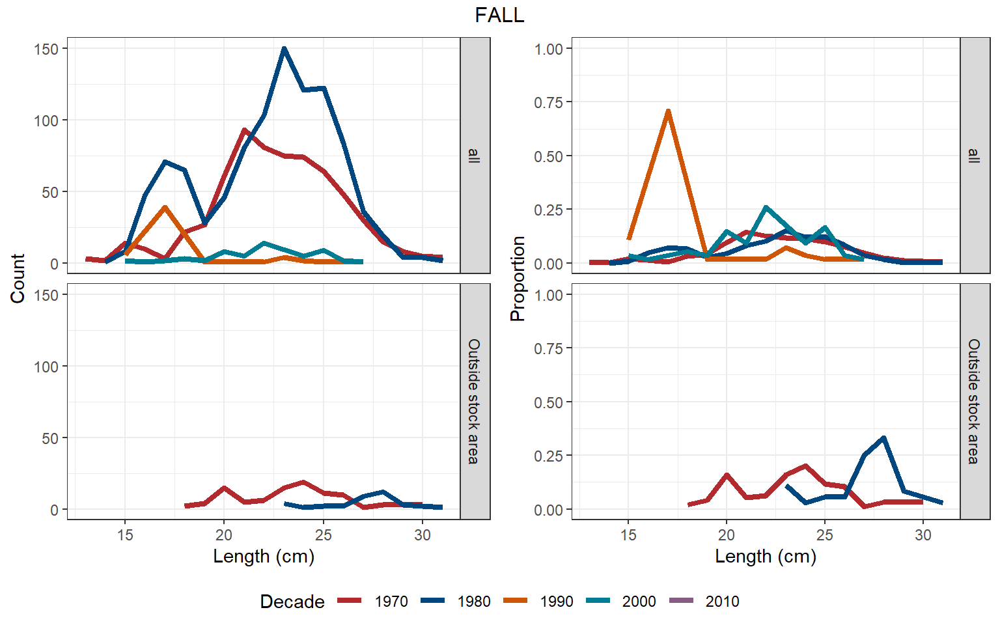
(#fig:length_freq-1)Alewife
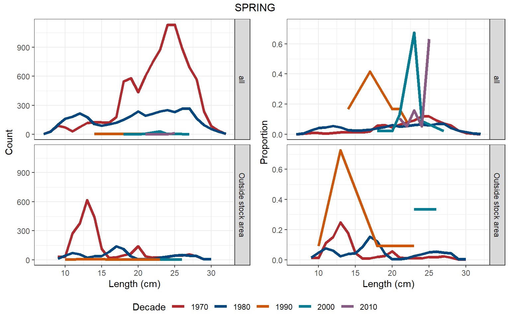
(#fig:length_freq-2)Alewife
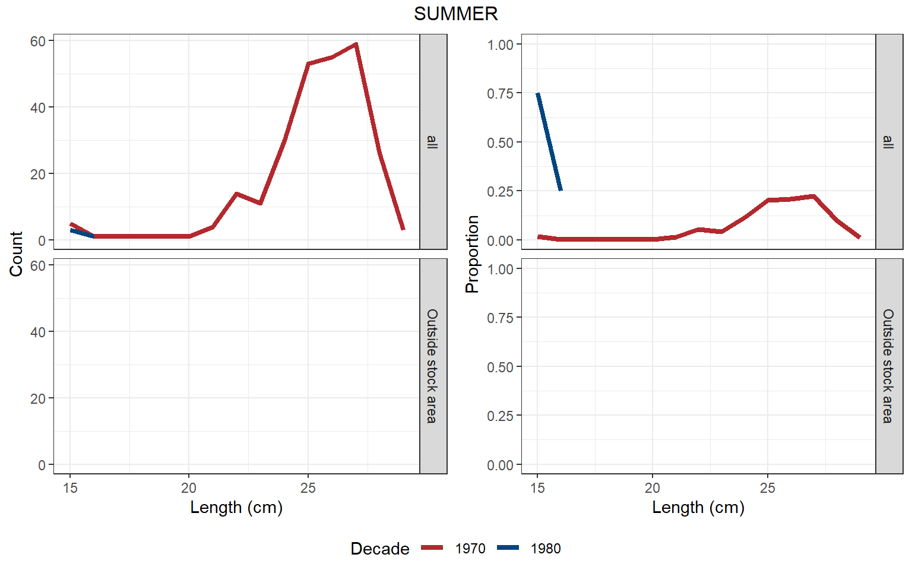
(#fig:length_freq-3)Alewife
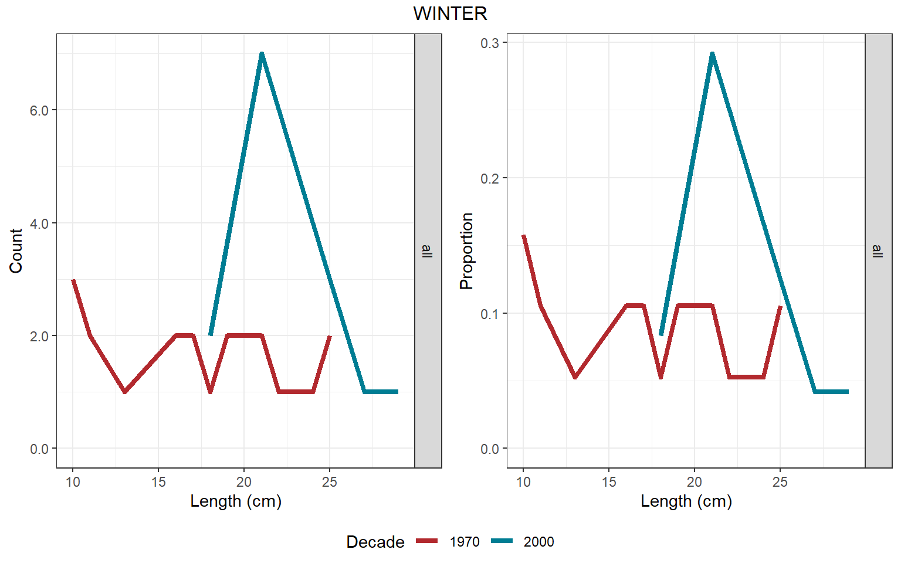
(#fig:length_freq-4)Alewife
Summary statistics
Separategeom_gls() functions were fit for the minimum, mean, and maximum lengths; trend lines are only shown when the trend was statistically significant, so some plots may have fewer than three trend lines. Please note, sometimes the survey observed a small number of fish outside of the defined stock area.
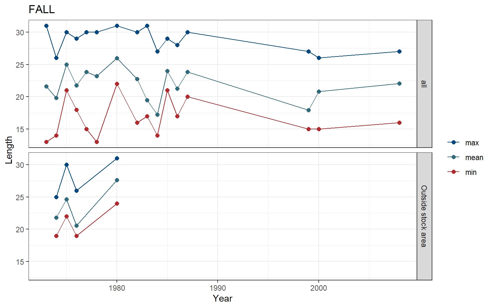
Figure 3.1: Alewife
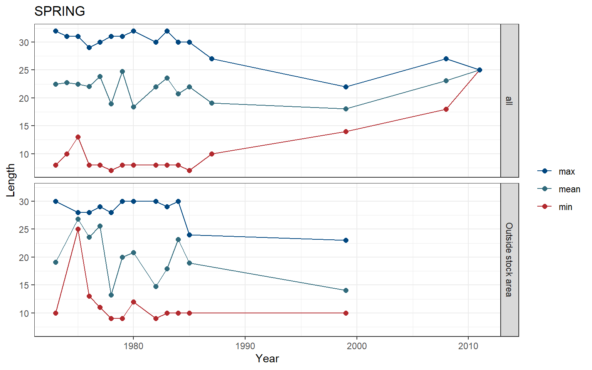
Figure 3.2: Alewife
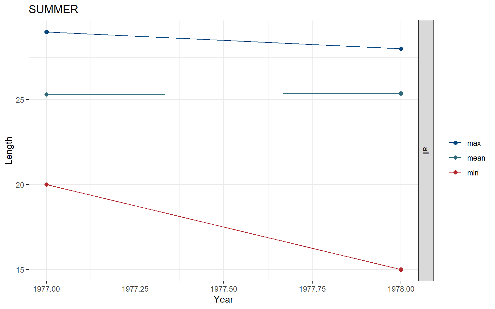
Figure 3.3: Alewife
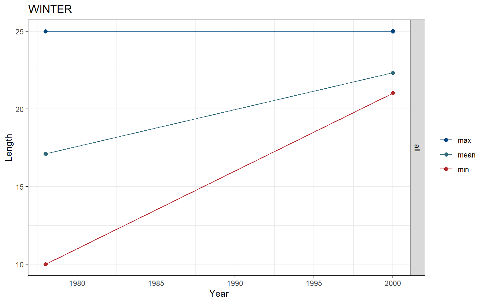
Figure 3.4: Alewife
Risk
See Methods for risk calculation details.
Rank of change compared to historical, ranked among stocks
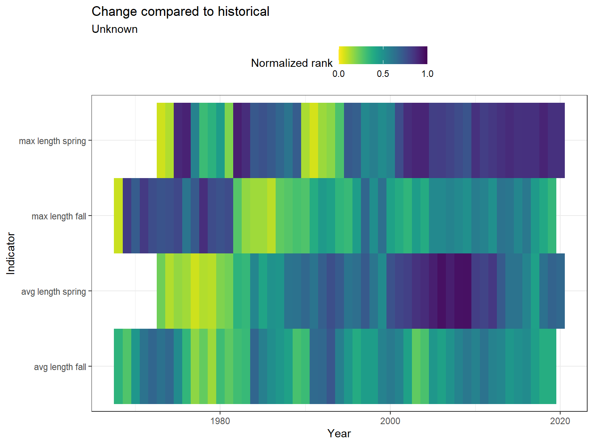
Figure 3.5: Alewife
Rank of value (magnitude) compared to other stocks
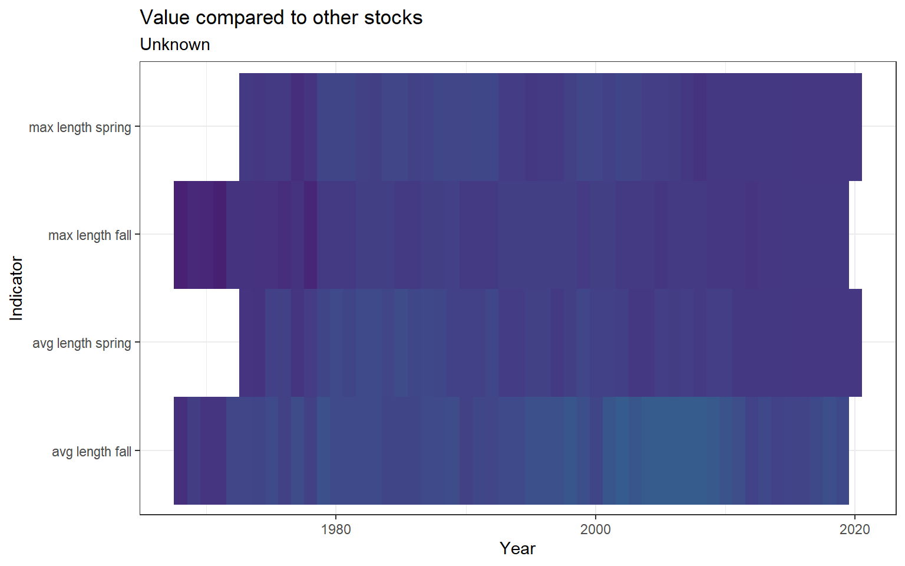
Figure 3.6: Alewife
Rank of value (magnitude) within a single stock, compared to all years
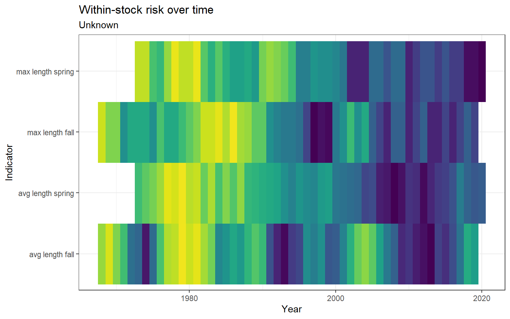
Figure 3.7: Alewife
3.1.2 Summary
| Season | Region | Mean value +- SD (n fish, n years) | Mean value +- SD (n fish, past 5 years) | Range (total) | Range (past 5 years) |
|---|---|---|---|---|---|
| FALL | all | 22.23 +- 3.3 (1,732, 16) | 22.03 +- 2.62 (33, 1) | 13 - 31 | 16 - 27 |
| FALL | Outside stock area | 24.48 +- 2.94 (116, 4) | 24.98 +- 3.74 (48, 2) | 19 - 31 | 19 - 31 |
| SPRING | all | 21.89 +- 5.01 (13,440, 16) | 23.62 +- 1.35 (45, 2) | 7 - 32 | 18 - 27 |
| SPRING | Outside stock area | 15.81 +- 4.96 (3,399, 12) | 14.09 +- 3.32 (11, 1) | 9 - 30 | 10 - 23 |
| SUMMER | all | 25.34 +- 2.32 (262, 2) | 25.34 +- 2.32 (262, 2) | 15 - 29 | 15 - 29 |
| WINTER | all | 19.13 +- 4.81 (31, 2) | 22.33 +- 1.75 (12, 1) | 10 - 25 | 21 - 25 |
3.1.3 Data
(#fig:length_data)Alewife